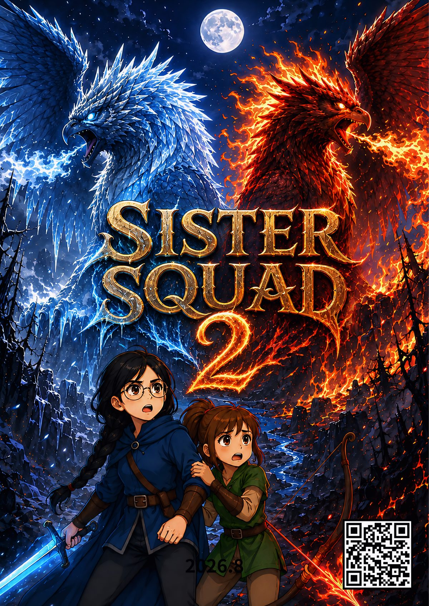
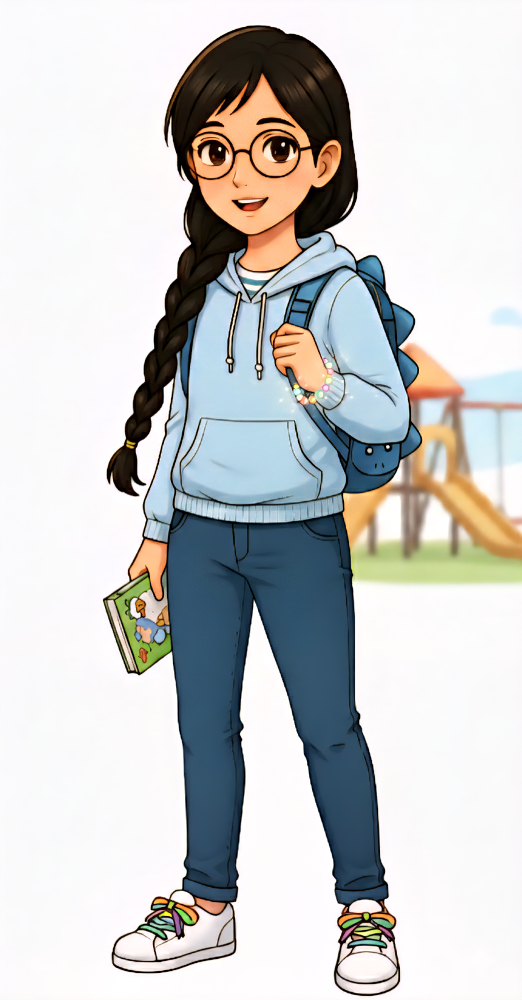
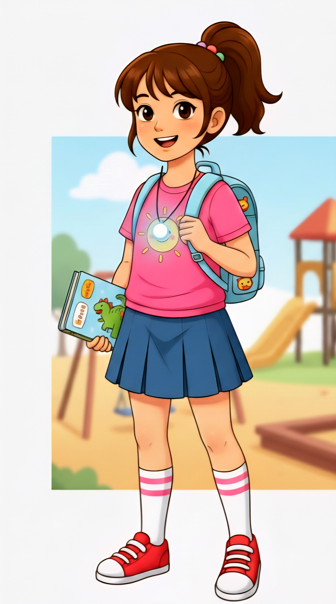

SISTER SQUAD 2
저주받은 요정마을
저주받은 요정마을

본편 공개에 앞서 SISTER SQUAD 2의 분위기와 새로운 모험을 먼저 만나볼 수 있는 세 편의 선공개 예고편입니다.
율이와 정이, 그리고 아빠 크리스의 두 번째 모험. 약 15분 분량의 본편은 곧 공개됩니다.

흔들리는 짜증쟁이1년 전 얻었던 자신감과 염력의 힘은 사춘기라는 폭풍 앞에 사그라들었다. 모든 상황에 짜증을 내며 동생을 통제하려 하지만, 진정한 승리는 완벽한 계획이 아닌 서로의 다름을 인정하는 것임을 깨달아간다.
"나 혼자도 힘들어. 정아, 제발 계획 좀 따르라고! …아니, 거기 말고!"

독립을 꿈꾸는 초딩과보호 속에서 독립하고 싶은 마음이 커졌다. 순수함이 때로 위험을 부르지만, 가장 결정적인 순간 모두를 구하는 열쇠가 된다.
"언니 말만 맞는 건 아니야! 내 목소리가, 내 마음이 이쪽으로 가라고 하고 있어!"
과거 동료를 잃은 트라우마를 숨긴 채, 딸들을 지키기 위해 시간을 다루는 힘을 다시 꺼내 든다. 대가가 끔찍하다는 걸 알면서도, 사랑을 위해 모든 것을 쏟아붓는다.
"너희는 모른다. 세상이 얼마나 위험한데… 하.. 그래 알았다. 가보자, 아빠가 지켜줄테니 해보자."
마법 세계는 모르지만 가족의 보이지 않는 긴장을 신기하게 잘 감지한다. 그녀가 지키는 '집'이라는 일상은 가족이 반드시 돌아와야 할 이유이자 가장 강력한 안식처다.
"엄마 몰래 탐험대? 하.. 나가는 길에 음식물 쓰레기 좀 버리고 가."
SISTER SQUAD 2의 놀라운 오리지널 사운드트랙을 지금 만나보세요. 유튜브, 애플뮤직, 스포티파이 등 주요 스트리밍 플랫폼에 출시되었습니다.
1편에서 요정 마을을 구했던 율이와 정이는 각자 사춘기와 초등학생 시절을 지나며 새로운 갈등을 마주합니다. 잿빛으로 물든 루미나를 되살리기 위해 죽음의 늪, 거인의 등뼈, 고요의 계곡을 지나 고대 도시 아르카디아까지 향하는 여정 속에서, 자매는 이성과 감성이 다르지 않고 서로를 완성한다는 것을 배웁니다.
1편을 쓸 때는 두 자매만으로 충분했습니다. 그런데 2편을 구상하면서, 저는 자꾸 이야기 안에 아빠 캐릭터를 세우고 싶다는 생각이 들었습니다. 아이들이 자라날수록 부모는 더 이상 모든 걸 대신 해결해줄 수 없다는 것을, 대신 함께 두려움을 마주하는 존재가 되어야 한다는 것을 배우고 있었기 때문입니다. 그래서 2편의 아빠는 완벽한 영웅이 아니라, 과거의 트라우마를 안고도 다시 딸들 곁에 서기로 결심하는 인물로 그렸습니다. 자매가 서로 부딪히며 진짜 자매애를 배우는 동안, 아빠 역시 딸들을 지키는 방법이 대신 싸워주는 것이 아니라 곁에 있어 주는 것임을 깨닫습니다.
Chris LEE.PAPA는 두 딸 율이와 정이가 자라나는 모습을 담아 Sister Squad 세계관을 이어가고 있습니다. 첫 번째 모험이 자매의 탄생을 그렸다면, 두 번째 모험은 성장통 속에서도 결국 서로를 지켜내는 진짜 가족의 사랑을 이야기합니다.
THEMES & JOURNEY
잿빛으로 변한 루미나를 되살리는 목표는 단순히 적을 쓰러뜨리는 임무와 다릅니다. 자매는 위험한 장소를 통과하고 월광초를 찾아야 하지만, 그 여정은 이미 상처 입은 세계를 다시 믿을 수 있는 곳으로 바꾸려는 시도이기도 합니다. 그래서 모험의 성취는 승리의 순간뿐 아니라 포기하지 않고 서로를 돌보는 선택에 담깁니다.
죽음의 늪은 환영과 두려움을 마주하는 여정의 위험을, 거인의 등뼈는 서로를 믿고 협력해야 하는 시험을, 고요의 계곡은 마지막 목표에 도달하기 전의 집중과 결단을 상징합니다. 이 장소들은 배경 장식이 아니라 자매가 어떤 방식으로 성장하고 있는지 드러내는 단계입니다.
두 번째 모험에서 아빠 크리스가 이야기 안에 함께하는 이유는 모든 문제를 대신 해결하기 위해서가 아닙니다. 부모도 두려움과 상처를 가진 인물이며, 아이들과 함께 선택하고 책임지는 존재라는 점을 보여줍니다. 자매 역시 서로를 보호하면서도 각자 판단하고 행동해야 합니다. 이 균형이 가족 서사의 중심입니다.